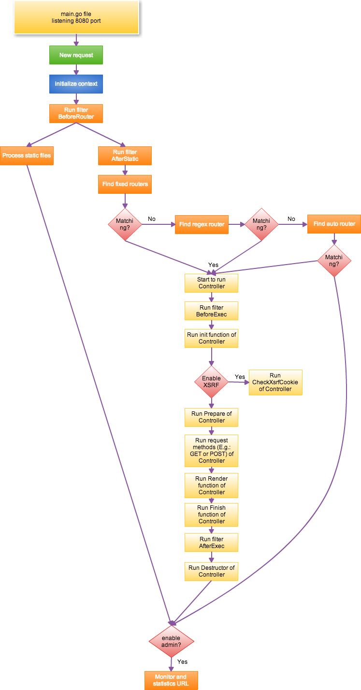

Beego的MVC架构
本文最后更新于：2021年8月30日 晚上
beego 的 MVC 架构介绍
beego 是一个典型的 MVC 框架，它的整个执行逻辑如下图所示：

通过文字来描述如下：
- 在监听的端口接收数据，默认监听在 8080 端口。
- 用户请求到达 8080 端口之后进入 beego 的处理逻辑。
- 初始化 Context 对象，根据请求判断是否为 WebSocket 请求，如果是的话设置 Input，同时判断请求的方法是否在标准请求方法中（GET、POST、PUT、DELETE、PATCH、OPTIONS、HEAD），防止用户的恶意伪造请求攻击造成不必要的影响。
- 执行 BeforeRouter 过滤器，当然在 beego 里面有开关设置。如果用户设置了过滤器，那么该开关打开，这样可以提高在没有开启过滤器的情况下提高执行效率。如果在执行过滤器过程中，responseWriter 已经有数据输出了，那么就提前结束该请求，直接跳转到监控判断。
- 开始执行静态文件的处理，查看用户的请求 URL 是否和注册在静态文件处理 StaticDir 中的 prefix 是否匹配。如果匹配的话，采用
http包中默认的 ServeFile 来处理静态文件。 - 如果不是静态文件开始初始化 session 模块(如果开启 session 的话)，这个里面大家需要注意，如果你的 BeforeRouter 过滤器用到了 session 就会报错，你应该把它加入到 AfterStatic 过滤器中。
- 开始执行 AfterStatic 过滤器，如果在执行过滤器过程中，responseWriter 已经有数据输出了，那么就提前结束该请求，直接跳转到监控判断。
- 执行过过滤器之后，开始从固定的路由规则中查找和请求 URL 相匹配的对象。这个匹配是全匹配规则，即如果用户请求的 URL 是
/hello/world，那么固定规则中/hello是不会匹配的，只有完全匹配才算匹配。如果匹配的话就进入逻辑执行，如果不匹配进入下一环节的正则匹配。 - 正则匹配是进行正则的全匹配，这个正则是按照用户添加 beego 路由顺序来进行匹配的，也就是说，如果你在添加路由的时候你的顺序影响你的匹配。和固定匹配一样，如果匹配的话就进行逻辑执行，如果不匹配进入 Auto 匹配。
- 如果用户注册了 AutoRouter，那么会通过
controller/method这样的方式去查找对应的 Controller 和他内置的方法，如果找到就开始执行逻辑，如果找不到就跳转到监控判断。 - 如果找到 Controller 的话，那么就开始执行逻辑，首先执行 BeforeExec 过滤器，如果在执行过滤器过程中，responseWriter 已经有数据输出了，那么就提前结束该请求，直接跳转到监控判断。
- Controller 开始执行 Init 函数，初始化基本的一些信息，这个函数一般都是 beego.Controller 的初始化，不建议用户继承的时候修改该函数。
- 是否开启了 XSRF，开启的话就调用 Controller 的 XsrfToken，然后如果是 POST 请求就调用 CheckXsrfCookie 方法。
- 继续执行 Controller 的 Prepare 函数，这个函数一般是预留给用户的，用来做 Controller 里面的一些参数初始化之类的工作。如果在初始化中 responseWriter 有输出，那么就直接进入 Finish 函数逻辑。
- 如果没有输出的话，那么根据用户注册的方法执行相应的逻辑，如果用户没有注册，那么就调用 http.Method 对应的方法（Get/Post 等）。执行相应的逻辑，例如数据读取，数据赋值，模板显示之类的，或者直接输出 JSON 或者 XML。
- 如果 responseWriter 没有输出，那么就调用 Render 函数进行模板输出。
- 执行 Controller 的 Finish 函数，这个函数是预留给用户用来重写的，用于释放一些资源。释放在 Init 中初始化的信息数据。
- 执行 AfterExec 过滤器，如果有输出的话就跳转到监控判断逻辑。
- 执行 Controller 的 Destructor，用于释放 Init 中初始化的一些数据。
- 如果这一路执行下来都没有找到路由，那么会调用 404 显示找不到该页面。
- 最后所有的逻辑都汇聚到了监控判断，如果用户开启了监控模块（默认是开启一个 8088 端口用于进程内监控），这样就会把访问的请求链接扔给监控程序去记录当前访问的 QPS，对应的链接访问的执行时间，请求链接等。
controller 设计
参数配置
beego 目前支持 INI、XML、JSON、YAML 格式的配置文件解析，但是默认采用了 INI 格式解析，用户可以通过简单的配置就可以获得很大的灵活性。
默认配置解析
beego 默认会解析当前应用下的 conf/app.conf 文件。
通过这个文件你可以初始化很多 beego 的默认参数：
1 | |
它们都维护在结构体 beego/server/web#Config 。
上面这些参数会替换 beego 默认的一些参数, beego 的参数主要有哪些呢？请参考https://godoc.org/github.com/beego/beego#pkg-constants 。
BConfig 就是 beego 里面的默认的配置，也是结构体 beego/server/web#Config 的实例。
你也可以直接通过web.BConfig.AppName="beepkg"这样来修改，和上面的配置效果一样，只是一个在代码里面写死了，而配置文件就会显得更加灵活。
你也可以在配置文件中配置应用需要用的一些配置信息，例如下面所示的数据库信息：
1 | |
那么你就可以通过如下的方式获取设置的配置信息:
1 | |
AppConfig 的方法如下：
- Set(key, val string) error
- String(key string) string
- Strings(key string) []string
- Int(key string) (int, error)
- Int64(key string) (int64, error)
- Bool(key string) (bool, error)
- Float(key string) (float64, error)
- DefaultString(key string, defaultVal string) string
- DefaultStrings(key string, defaultVal []string)
- DefaultInt(key string, defaultVal int) int
- DefaultInt64(key string, defaultVal int64) int64
- DefaultBool(key string, defaultVal bool) bool
- DefaultFloat(key string, defaultVal float64) float64
- DIY(key string) (interface{}, error)
- GetSection(section string) (map[string]string, error)
- SaveConfigFile(filename string) error
在使用 ini 类型的配置文件中, key 支持 section::key 模式.
你可以用 Default* 方法返回默认值.
你也可以参考 配置模块
不同级别的配置
在配置文件里面支持 section，可以有不同的 Runmode 的配置，默认优先读取 runmode 下的配置信息，例如下面的配置文件：
1 | |
上面的配置文件就是在不同的 runmode 下解析不同的配置，例如在 dev 模式下，httpport 是 8080，在 prod 模式下是 8088，在 test 模式下是 8888。其他配置文件同理。解析的时候优先解析 runmode 下的配置，然后解析默认的配置。
读取不同模式下配置参数的方法是“模式::配置参数名”，比如：beego.AppConfig.String(“dev::mysqluser”)。
对于自定义的参数，需使用 GetConfig(typ, key string, defaultVal interface{}) 来获取指定 runmode 下的配置（需 1.4.0 以上版本），typ 为参数类型，key 为参数名, defaultVal 为默认值。
多个配置文件
INI 格式配置支持 include 方式，引用多个配置文件，例如下面的两个配置文件效果同上：
app.conf
1 | |
app2.conf
1 | |
支持环境变量配置
配置文件解析支持从环境变量中获取配置项，配置项格式：${环境变量}。例如下面的配置中优先使用环境变量中配置的 runmode 和 httpport，如果有配置环境变量 ProRunMode 则优先使用该环境变量值。如果不存在或者为空，则使用 “dev” 作为 runmode。
app.conf
1 | |
系统默认参数
beego 中带有很多可配置的参数，我们来一一认识一下它们，这样有利于我们在接下来的 beego 开发中可以充分的发挥他们的作用(你可以通过在 conf/app.conf 中设置对应的值，不区分大小写)：
基础配置
- BConfig
保存了所有 beego 里面的系统默认参数，你可以通过web.BConfig来访问和修改底下的所有配置信息.
配置文件路径，默认是应用程序对应的目录下的
conf/app.conf，用户可以在程序代码中加载自己的配置文件beego.LoadAppConfig("ini", "conf/app2.conf")
也可以加载多个文件，只要你调用多次就可以了，如果后面的文件和前面的 key 冲突，那么以最新加载的为最新值
App 配置
AppName
应用名称，默认是 beego。通过
bee new创建的是创建的项目名。web.BConfig.AppName = "beego"RunMode
应用的运行模式，可选值为
prod,dev或者test. 默认是dev, 为开发模式，在开发模式下出错会提示友好的出错页面，如前面错误描述中所述。web.BConfig.RunMode = "dev"RouterCaseSensitive
是否路由忽略大小写匹配，默认是 true，区分大小写
web.BConfig.RouterCaseSensitive = trueServerName
beego 服务器默认在请求的时候输出 server 为 beego。
web.BConfig.ServerName = "beego"RecoverPanic
是否异常恢复，默认值为 true，即当应用出现异常的情况，通过 recover 恢复回来，而不会导致应用异常退出。
web.BConfig.RecoverPanic = trueCopyRequestBody
是否允许在 HTTP 请求时，返回原始请求体数据字节，默认为 false （GET or HEAD or 上传文件请求除外）。
web.BConfig.CopyRequestBody = falseEnableGzip
是否开启 gzip 支持，默认为 false 不支持 gzip，一旦开启了 gzip，那么在模板输出的内容会进行 gzip 或者 zlib 压缩，根据用户的 Accept-Encoding 来判断。
web.BConfig.EnableGzip = falseGzip允许用户自定义压缩级别、压缩长度阈值和针对请求类型压缩:
- 压缩级别,
gzipCompressLevel = 9,取值为 1~9,如果不设置为 1(最快压缩) - 压缩长度阈值,
gzipMinLength = 256,当原始内容长度大于此阈值时才开启压缩,默认为 20B(ngnix默认长度) - 请求类型,
includedMethods = get;post,针对哪些请求类型进行压缩,默认只针对 GET 请求压缩
- 压缩级别,
MaxMemory
文件上传默认内存缓存大小，默认值是
1 << 26(64M)。web.BConfig.MaxMemory = 1 << 26EnableErrorsShow
是否显示系统错误信息，默认为 true。
web.BConfig.EnableErrorsShow = trueEnableErrorsRender
是否将错误信息进行渲染，默认值为 true，即出错会提示友好的出错页面，对于 API 类型的应用可能需要将该选项设置为 false 以阻止在
dev模式下不必要的模板渲染信息返回。
Web配置
AutoRender
是否模板自动渲染，默认值为 true，对于 API 类型的应用，应用需要把该选项设置为 false，不需要渲染模板。
web.BConfig.WebConfig.AutoRender = trueEnableDocs
是否开启文档内置功能，默认是 false
web.BConfig.WebConfig.EnableDocs = trueFlashName
Flash 数据设置时 Cookie 的名称，默认是 BEEGO_FLASH
web.BConfig.WebConfig.FlashName = "BEEGO_FLASH"FlashSeperator
Flash 数据的分隔符，默认是 BEEGOFLASH
web.BConfig.WebConfig.FlashSeparator = "BEEGOFLASH"DirectoryIndex
是否开启静态目录的列表显示，默认不显示目录，返回 403 错误。
web.BConfig.WebConfig.DirectoryIndex = falseStaticDir
静态文件目录设置，默认是static
可配置单个或多个目录:
- 单个目录,
StaticDir = download. 相当于beego.SetStaticPath("/download","download") - 多个目录,
StaticDir = download:down download2:down2. 相当于beego.SetStaticPath("/download","down")和beego.SetStaticPath("/download2","down2")
web.BConfig.WebConfig.StaticDir- 单个目录,
StaticExtensionsToGzip
允许哪些后缀名的静态文件进行 gzip 压缩，默认支持 .css 和 .js
web.BConfig.WebConfig.StaticExtensionsToGzip = []string{".css", ".js"}等价 config 文件中
1
StaticExtensionsToGzip = .css, .jsTemplateLeft
模板左标签，默认值是
{{`。 `web.BConfig.WebConfig.TemplateLeft="{{"` - TemplateRight 模板右标签，默认值是`}}。web.BConfig.WebConfig.TemplateRight="}}"ViewsPath
模板路径，默认值是 views。
web.BConfig.WebConfig.ViewsPath="views"EnableXSRF
是否开启 XSRF，默认为 false，不开启。
web.BConfig.WebConfig.EnableXSRF = falseXSRFKEY
XSRF 的 key 信息，默认值是 beegoxsrf。 EnableXSRF＝true 才有效
web.BConfig.WebConfig.XSRFKEY = "beegoxsrf"XSRFExpire
XSRF 过期时间，默认值是 0，不过期。
web.BConfig.WebConfig.XSRFExpire = 0CommentRouterPath
CommentRouterPath 注解路由所在位置。默认值是
controllers。 Beego 会在启动的时候扫描下面的文件生成了路由。web.BConfig.WebConfig.CommentRouterPath = "controllers"
监听配置
Graceful
是否开启热升级，默认是 false，关闭热升级。
web.BConfig.Listen.Graceful=falseServerTimeOut
设置 HTTP 的超时时间，默认是 0，不超时。
web.BConfig.Listen.ServerTimeOut=0ListenTCP4
监听本地网络地址类型，默认是TCP6，可以通过设置为true设置为TCP4。
web.BConfig.Listen.ListenTCP4 = trueEnableHTTP
是否启用 HTTP 监听，默认是 true。
web.BConfig.Listen.EnableHTTP = trueHTTPAddr
应用监听地址，默认为空，监听所有的网卡 IP。
web.BConfig.Listen.HTTPAddr = ""HTTPPort
应用监听端口，默认为 8080。
web.BConfig.Listen.HTTPPort = 8080EnableHTTPS
是否启用 HTTPS，默认是 false 关闭。当需要启用时，先设置 EnableHTTPS = true，并设置
HTTPSCertFile和HTTPSKeyFileweb.BConfig.Listen.EnableHTTPS = falseHTTPSAddr
应用监听地址，默认为空，监听所有的网卡 IP。
web.BConfig.Listen.HTTPSAddr = ""HTTPSPort
应用监听端口，默认为 10443
web.BConfig.Listen.HTTPSPort = 10443HTTPSCertFile
开启 HTTPS 后，ssl 证书路径，默认为空。
web.BConfig.Listen.HTTPSCertFile = "conf/ssl.crt"HTTPSKeyFile
开启 HTTPS 之后，SSL 证书 keyfile 的路径。
web.BConfig.Listen.HTTPSKeyFile = "conf/ssl.key"EnableAdmin
是否开启进程内监控模块，默认 false 关闭。
web.BConfig.Listen.EnableAdmin = falseAdminAddr
监控程序监听的地址，默认值是 localhost 。
web.BConfig.Listen.AdminAddr = "localhost"AdminPort
监控程序监听的地址，默认值是 8088 。
web.BConfig.Listen.AdminPort = 8088EnableFcgi
是否启用 fastcgi ， 默认是 false。
web.BConfig.Listen.EnableFcgi = falseEnableStdIo
通过fastcgi 标准I/O，启用 fastcgi 后才生效，默认 false。
web.BConfig.Listen.EnableStdIo = false
Session配置
SessionOn
session 是否开启，默认是 false。
web.BConfig.WebConfig.Session.SessionOn = falseSessionProvider
session 的引擎，默认是 memory，详细参见
session 模块。web.BConfig.WebConfig.Session.SessionProvider = ""SessionName
存在客户端的 cookie 名称，默认值是 beegosessionID。
web.BConfig.WebConfig.Session.SessionName = "beegosessionID"SessionGCMaxLifetime
session 过期时间，默认值是 3600 秒。
web.BConfig.WebConfig.Session.SessionGCMaxLifetime = 3600SessionProviderConfig
配置信息，根据不同的引擎设置不同的配置信息，详细的配置请看下面的引擎设置，详细参见 session 模块
SessionCookieLifeTime
session 默认存在客户端的 cookie 的时间，默认值是 3600 秒。
web.BConfig.WebConfig.Session.SessionCookieLifeTime = 3600SessionAutoSetCookie
是否开启SetCookie, 默认值 true 开启。
web.BConfig.WebConfig.Session.SessionAutoSetCookie = trueSessionDomain
session cookie 存储域名, 默认空。
web.BConfig.WebConfig.Session.SessionDomain = ""
Log配置
1 | |
AccessLogs
是否输出日志到 Log，默认在 prod 模式下不会输出日志，默认为 false 不输出日志。此参数不支持配置文件配置。
web.BConfig.Log.AccessLogs = falseFileLineNum
是否在日志里面显示文件名和输出日志行号，默认 true。此参数不支持配置文件配置。
web.BConfig.Log.FileLineNum = trueOutputs
日志输出配置，参考 logs 模块，console file 等配置，此参数不支持配置文件配置。
web.BConfig.Log.Outputs = map[string]string{"console": ""}or
web.BConfig.Log.Outputs["console"] = ""
路由设置
什么是路由设置呢？前面介绍的 MVC 结构执行时，介绍过 beego 存在三种方式的路由:固定路由、正则路由、自动路由，接下来详细的讲解如何使用这三种路由。
基础路由
从 beego 1.2 版本开始支持了基本的 RESTful 函数式路由,应用中的大多数路由都会定义在 routers/router.go 文件中。最简单的 beego 路由由 URI 和闭包函数组成。
基本 GET 路由
1 | |
基本 POST 路由
1 | |
注册一个可以响应任何 HTTP 的路由
1 | |
所有的支持的基础函数如下所示
- web.Get(router, web.HandleFunc)
- web.Post(router, web.HandleFunc)
- web.Put(router, web.HandleFunc)
- web.Patch(router, web.HandleFunc)
- web.Head(router, web.HandleFunc)
- web.Options(router, web.HandleFunc)
- web.Delete(router, web.HandleFunc)
- web.Any(router, web.HandleFunc)
支持自定义的 handler 实现
有些时候我们已经实现了一些 rpc 的应用,但是想要集成到 beego 中,或者其他的 httpserver 应用,集成到 beego 中来.现在可以很方便的集成:
1 | |
web.Handler(router, http.Handler) 这个函数是关键,第一个参数表示路由 URI, 第二个就是你自己实现的 http.Handler, 注册之后就会把所有 rpc 作为前缀的请求分发到 http.Handler 中进行处理.
这个函数其实还有第三个参数就是是否是前缀匹配,默认是 false, 如果设置了 true, 那么就会在路由匹配的时候前缀匹配,即 /rpc/user 这样的也会匹配去运行
路由参数
后面会讲到固定路由,正则路由,这些参数一样适用于上面的这些函数
RESTful Controller 路由
在介绍这三种 beego 的路由实现之前先介绍 RESTful，我们知道 RESTful 是一种目前 API 开发中广泛采用的形式，beego 默认就是支持这样的请求方法，也就是用户 Get 请求就执行 Get 方法，Post 请求就执行 Post 方法。因此默认的路由是这样 RESTful 的请求方式。
固定路由
固定路由也就是全匹配的路由，如下所示：
1 | |
如上所示的路由就是我们最常用的路由方式，一个固定的路由，一个控制器，然后根据用户请求方法不同请求控制器中对应的方法，典型的 RESTful 方式。
正则路由
为了用户更加方便的路由设置，beego 参考了 sinatra 的路由实现，支持多种方式的路由：
web.Router(“/api/?:id”, &controllers.RController{})
默认匹配 //例如对于URL”/api/123”可以匹配成功，此时变量”:id”值为”123”，URL”/api/“可正常匹配
web.Router(“/api/:id”, &controllers.RController{})
默认匹配 //例如对于URL”/api/123”可以匹配成功，此时变量”:id”值为”123”，但URL”/api/“匹配失败
web.Router(“/api/:id([0-9]+)“, &controllers.RController{})
自定义正则匹配 //例如对于URL”/api/123”可以匹配成功，此时变量”:id”值为”123”
web.Router(“/user/:username([\w]+)“, &controllers.RController{})
正则字符串匹配 //例如对于URL”/user/astaxie”可以匹配成功，此时变量”:username”值为”astaxie”
web.Router(“/download/*.*”, &controllers.RController{})
*匹配方式 //例如对于URL”/download/file/api.xml”可以匹配成功，此时变量”:path”值为”file/api”， “:ext”值为”xml”
web.Router(“/download/ceshi/*“, &controllers.RController{})
*全匹配方式 //例如对于URL”/download/ceshi/file/api.json”可以匹配成功，此时变量”:splat”值为”file/api.json”
web.Router(“/:id:int”, &controllers.RController{})
int 类型设置方式，匹配 :id为int 类型，框架帮你实现了正则 ([0-9]+)
web.Router(“/:hi:string”, &controllers.RController{})
string 类型设置方式，匹配 :hi 为 string 类型。框架帮你实现了正则 ([\w]+)
web.Router(“/cms_:id([0-9]+).html”, &controllers.CmsController{})
带有前缀的自定义正则 //匹配 :id 为正则类型。匹配 cms_123.html 这样的 url :id = 123
可以在 Controller 中通过如下方式获取上面的变量：
1 | |
自定义方法及 RESTful 规则
上面列举的是默认的请求方法名（请求的 method 和函数名一致，例如 GET 请求执行 Get 函数，POST 请求执行 Post 函数），如果用户期望自定义函数名，那么可以使用如下方式：
1 | |
使用第三个参数，第三个参数就是用来设置对应 method 到函数名，定义如下
*表示任意的 method 都执行该函数- 使用 httpmethod:funcname 格式来展示
- 多个不同的格式使用
;分割 - 多个 method 对应同一个 funcname，method 之间通过
,来分割
以下是一个 RESTful 的设计示例：
1 | |
以下是多个 HTTP Method 指向同一个函数的示例：
1 | |
以下是不同的 method 对应不同的函数，通过 ; 进行分割的示例：
1 | |
可用的 HTTP Method：
- *: 包含以下所有的函数
- get: GET 请求
- post: POST 请求
- put: PUT 请求
- delete: DELETE 请求
- patch: PATCH 请求
- options: OPTIONS 请求
- head: HEAD 请求
如果同时存在 * 和对应的 HTTP Method，那么优先执行 HTTP Method 的方法，例如同时注册了如下所示的路由：
1 | |
那么执行 POST 请求的时候，执行 PostFunc 而不执行 AllFunc。
自定义函数的路由默认不支持 RESTful 的方法，也就是如果你设置了
web.Router("/api",&RestController{},"post:ApiFunc")这样的路由，如果请求的方法是POST，那么不会默认去执行Post函数。
自动匹配
用户首先需要把需要路由的控制器注册到自动路由中：
1 | |
那么 beego 就会通过反射获取该结构体中所有的实现方法，你就可以通过如下的方式访问到对应的方法中：
1 | |
除了前缀两个 /:controller/:method 的匹配之外，剩下的 url beego 会帮你自动化解析为参数，保存在 this.Ctx.Input.Params 当中：
1 | |
方法名在内部是保存了用户设置的，例如 Login，url 匹配的时候都会转化为小写，所以，/object/LOGIN 这样的 url 也一样可以路由到用户定义的 Login 方法中【实际在1.10.1版本中测试，不会转化大小写，即只能匹配/object/login，其他均不能正常识别】。
现在已经可以通过自动识别出来下面类似的所有 url，都会把请求分发到 controller 的 simple 方法：
1 | |
可以通过 this.Ctx.Input.Param(":ext") 获取后缀名。
注解路由
从2.0开始，我们使用配置CommentRouterPath来配置注解路由的扫描路径。在dev环境下，我们将自动扫描该配置指向的目录及其子目录，生成路由文件。
生成之后，用户需要显示 Include 相应地 controller。注意， controller 的 method 方法上面须有 router 注释（// @router），详细的使用请看下面的例子：
1 | |
可以在 router.go 中通过如下方式注册路由：
1 | |
web 自动会进行源码分析，注意只会在 dev 模式下进行生成，生成的路由放在 “/routers/commentsRouter.go” 文件中。
这样上面的路由就支持了如下的路由：
- GET /staticblock/:key
- GET /all/:key
其实效果和自己通过 Router 函数注册是一样的：
1 | |
同时大家注意到新版本里面增加了 URLMapping 这个函数，这是新增加的函数，用户如果没有进行注册，那么就会通过反射来执行对应的函数，如果注册了就会通过 interface 来进行执行函数，性能上面会提升很多。
方法表达式路由
方法表达式路由与上面的RESTful基本相似，区别是无需在传入http method和controller方法（如："get:StaticBlock"）。
只需要通过golang的method expression进行传入方法表达式。如果方法是receiver是非指针，则直接使用 包名.Controller.Method 方法 传入，
如果receiver是指针，则使用 (*包名.Controller).Method 进行传参。假如在同包下，包名可进行省略。
1 | |
共有以下几种函数：
- web.CtrlGet(router, pkg.controller.method)
- web.CtrlPost(router, pkg.controller.method)
- web.CtrlPut(router, pkg.controller.method)
- web.CtrlPatch(router, pkg.controller.method)
- web.CtrlHead(router, pkg.controller.method)
- web.CtrlOptions(router, pkg.controller.method)
- web.CtrlDelete(router, pkg.controller.method)
- web.CtrlAny(router, pkg.controller.method)
同时也支持namespace的使用：
- web.NSCtrlGet
- web.NSCtrlPost
- ……
namespace
1 | |
上面这个代码支持了如下这样的请求 URL
- GET /v1/notallowed
- GET /v1/version
- GET /v1/changepassword
- POST /v1/changepassword
- GET /v1/shop/123
- GET /v1/cms/ 对应 MainController、CMSController、BlockController 中的注解路由
而且还支持前置过滤,条件判断,无限嵌套 namespace
namespace 的接口如下:
NewNamespace(prefix string, funcs …interface{})
初始化 namespace 对象,下面这些函数都是 namespace 对象的方法,但是强烈推荐使用 NS 开头的相应函数注册，因为这样更容易通过 gofmt 工具看的更清楚路由的级别关系
NSCond(cond namespaceCond)
支持满足条件的就执行该 namespace, 不满足就不执行
NSBefore(filiterList …FilterFunc)
NSAfter(filiterList …FilterFunc)
上面分别对应 beforeRouter 和 FinishRouter 两个过滤器，可以同时注册多个过滤器
NSInclude(cList …ControllerInterface)
NSRouter(rootpath string, c ControllerInterface, mappingMethods …string)
NSGet(rootpath string, f HandleFunc)
NSPost(rootpath string, f HandleFunc)
NSDelete(rootpath string, f HandleFunc)
NSPut(rootpath string, f HandleFunc)
NSHead(rootpath string, f HandleFunc)
NSOptions(rootpath string, f HandleFunc)
NSPatch(rootpath string, f HandleFunc)
NSAny(rootpath string, f HandleFunc)
NSHandler(rootpath string, h http.Handler)
NSAutoRouter(c ControllerInterface)
NSAutoPrefix(prefix string, c ControllerInterface)
上面这些都是设置路由的函数,详细的使用和上面 beego 的对应函数是一样的
NSNamespace(prefix string, params …innnerNamespace)
嵌套其他 namespace
1
2
3
4
5
6
7
8
9
10
11
12
13
14
15
16
17
18ns :=
web.NewNamespace("/v1",
web.NSNamespace("/shop",
web.NSGet("/:id", func(ctx *context.Context) {
ctx.Output.Body([]byte("shopinfo"))
}),
),
web.NSNamespace("/order",
web.NSGet("/:id", func(ctx *context.Context) {
ctx.Output.Body([]byte("orderinfo"))
}),
),
web.NSNamespace("/crm",
web.NSGet("/:id", func(ctx *context.Context) {
ctx.Output.Body([]byte("crminfo"))
}),
),
)
下面这些函数都是属于 *Namespace 对象的方法：不建议直接使用，当然效果和上面的 NS 开头的函数是一样的，只是上面的方式更优雅，写出来的代码更容易看得懂
Cond(cond namespaceCond)
支持满足条件的就执行该 namespace, 不满足就不执行,例如你可以根据域名来控制 namespace
Filter(action string, filter FilterFunc)
action 表示你需要执行的位置, before 和 after 分别表示执行逻辑之前和执行逻辑之后的 filter
Router(rootpath string, c ControllerInterface, mappingMethods …string)
AutoRouter(c ControllerInterface)
AutoPrefix(prefix string, c ControllerInterface)
Get(rootpath string, f HandleFunc)
Post(rootpath string, f HandleFunc)
Delete(rootpath string, f HandleFunc)
Put(rootpath string, f HandleFunc)
Head(rootpath string, f HandleFunc)
Options(rootpath string, f HandleFunc)
Patch(rootpath string, f HandleFunc)
Any(rootpath string, f HandleFunc)
Handler(rootpath string, h http.Handler)
上面这些都是设置路由的函数,详细的使用和上面 beego 的对应函数是一样的
Namespace(ns …*Namespace)
更多的例子代码：
1 | |
控制器介绍
基于 beego 的 Controller 设计，只需要匿名组合 beego.Controller 就可以了，如下所示：
1 | |
控制器方法
web.Controller 实现了接口 web.ControllerInterface，web.ControllerInterface 定义了如下函数：
Init(ctx *context.Context, controllerName, actionName string, app interface{})
这个函数主要初始化了 Context、相应的 Controller 名称，模板名，初始化模板参数的容器 Data，app 即为当前执行的 Controller 的 reflecttype，这个 app 可以用来执行子类的方法。
Prepare()
这个函数主要是为了用户扩展用的，这个函数会在下面定义的这些 Method 方法之前执行，用户可以重写这个函数实现类似用户验证之类。
Get()
如果用户请求的 HTTP Method 是 GET，那么就执行该函数，默认是 405，用户继承的子 struct 中可以实现了该方法以处理 Get 请求。
Post()
如果用户请求的 HTTP Method 是 POST，那么就执行该函数，默认是 405，用户继承的子 struct 中可以实现了该方法以处理 Post 请求。
Delete()
如果用户请求的 HTTP Method 是 DELETE，那么就执行该函数，默认是 405，用户继承的子 struct 中可以实现了该方法以处理 Delete 请求。
Put()
如果用户请求的 HTTP Method 是 PUT，那么就执行该函数，默认是 405，用户继承的子 struct 中可以实现了该方法以处理 Put 请求.
Head()
如果用户请求的 HTTP Method 是 HEAD，那么就执行该函数，默认是 405，用户继承的子 struct 中可以实现了该方法以处理 Head 请求。
Patch()
如果用户请求的 HTTP Method 是 PATCH，那么就执行该函数，默认是 405，用户继承的子 struct 中可以实现了该方法以处理 Patch 请求.
Options()
如果用户请求的HTTP Method是OPTIONS，那么就执行该函数，默认是 405，用户继承的子 struct 中可以实现了该方法以处理 Options 请求。
Finish()
这个函数是在执行完相应的 HTTP Method 方法之后执行的，默认是空，用户可以在子 struct 中重写这个函数，执行例如数据库关闭，清理数据之类的工作。
Trace() error
如果用户请求的 HTTP Method 是 Trace，那么就执行该函数，默认是 405，用户继承的子 struct 中可以实现了该方法以处理 Head 请求。
Render() error
这个函数主要用来实现渲染模板，如果 beego.AutoRender 为 true 的情况下才会执行。
Mapping(method string, fn func())
注册一个方法。一般而言， method 是合法的 HTTP 方法名。当然，用户注册自己特定的业务逻辑方法，而后手动调用。
HandlerFunc(fnname string) bool
在前面 Mapping 方法里面注册的方法，可以通过该方法来使用。只会返回调用是否成功的信息——一般而言，只有方法不存在才会返回 false
RenderBytes() ([]byte, error)
将模板渲染成字节数组。需要注意的是，该方法并未检测
EnableRender设置。并且，和Render方法相比，它并未将结果输出到Response。RenderString() (string, error)
类似于
RenderBytes方法。只是将结果转化为了string。Redirect(url string, code int)
重定向。
url是目的地址。SetData(data interface{})
将
data存储在控制的数据中。一般而言，你不会考虑用到这个方法。Abort(code string)
中断当前方法的执行，直接返回该状态码，类似于
CustomAbort。参考errorsCustomAbort(status int, body string)
中断方法执行，直接返回该状态码和信息。参考errors
StopRun()
直接触发
panic。ServeXXX(encoding …bool) error
返回特性类型的响应。目前我们支持 JSON，JSONP，XML，YAML。参考输出格式
ServeFormatted(encoding …bool) error
返回响应。其格式由客户端的
Accept选项指定。参考输出格式Input() (url.Values, error)
返回传入的参数。
ParseForm(obj interface{}) error
将表单反序列化到 obj 对象中。
GetXXX(key string, def…) XXX, err
从传入参数中，读取某个值。如果传入了默认值，那么在读取不到的情况下，返回默认值，否则返回错误。XXX 可以是 golang 所支持的基本类型，或者是 string, File 对象
SaveToFile(fromfile, tofile string) error
将上传的文件保存到文件系统中。其中
fromfile是上传的文件的名字。SetSession(name interface{}, value interface{}) error
往
Session中设置值。GetSession(name interface{}) interface{}
从
Session中读取值。DelSession(name interface{}) error
从
Session中删除某项。SessionRegenerateID() error
重新生成一个
SessionId。DestroySession() error
销毁
SessionIsAjax() bool
是否是 Ajax 请求
GetSecureCookie(Secret, key string) (string, bool)
从
Cookie中读取数据。bool返回值，表达是否取到了数据。SetSecureCookie(Secret, name, value string, others …interface{})
设置
Cookie。XSRFToken() string
创建一个
CSRFtoken.CheckXSRFCookie() bool
检测是否有
CSRFtoken
子类扩展
通过子 struct 的方法重写，用户就可以实现自己的逻辑，接下来我们看一个实际的例子：
1 | |
从上面的例子可以看出来，通过重写方法可以实现对应 method 的逻辑，实现 RESTFul 结构的逻辑处理。
下面我们再来看一种比较流行的架构，首先实现一个自己的基类 baseController，实现一些初始化的方法，然后其他所有的逻辑继承自该基类：
1 | |
上面定义了基类，大概是初始化了一些变量，最后有一个 Init 函数中那个 app 的应用，判断当前运行的 Controller 是否是 NestPreparer 实现，如果是的话调用子类的方法，下面我们来看一下 NestPreparer 的实现：
1 | |
这样我们的执行器执行的逻辑是这样的，首先执行 Prepare，这个就是 Go 语言中 struct 中寻找方法的顺序，依次往父类寻找。执行 BaseAdminRouter 时，查找他是否有 Prepare 方法，没有就寻找 baseController，找到了，那么就执行逻辑，然后在 baseController 里面的 this.AppController 即为当前执行的控制器 BaseAdminRouter，因为会执行 BaseAdminRouter.NestPrepare 方法。然后开始执行相应的 Get 方法或者 Post 方法。
提前终止运行
我们应用中经常会遇到这样的情况，在 Prepare 阶段进行判断，如果用户认证不通过，就输出一段信息，然后直接中止进程，之后的 Post、Get 之类的不再执行，那么如何终止呢？可以使用 StopRun 来终止执行逻辑，可以在任意的地方执行。
1 | |
本博客所有文章除特别声明外，均采用 CC BY-SA 4.0 协议 ，转载请注明出处！